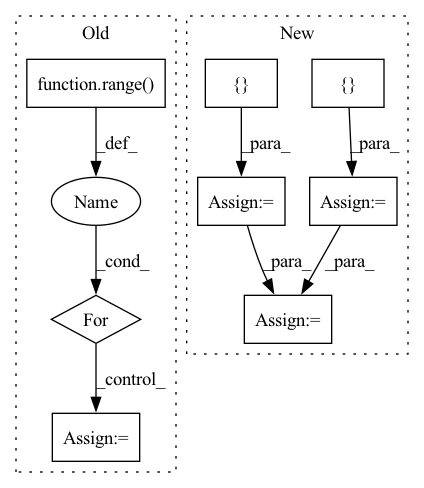

Pattern ID :29361

Before Change
// 初始化一个用于存放模型翻译结果句子单词的列表
translation = []
// 遍历翻译输出字符的下标（注意：开始符"BOS"的索引0不遍历）
for j in range(1, out.size(1)):
// 获取当前下标的输出字符
sym = data.cn_index_dict[out[0, j].item()]
// 如果输出字符不为"EOS"终止符，则添加到当前句子的翻译结果列表
if sym != "EOS":
translation.append(sym)
After Change
def evaluate(data, model):
在data上用训练好的模型进行预测，打印模型翻译结果
sp_chn = chinese_tokenizer_load()
trg = []
res = []
with torch.no_grad():
// 在data的英文数据长度上遍历下标
for batch in tqdm(data):
// 待翻译的英文句子
en_sent = batch.src_text
// 对应的中文句子
cn_sent = batch.trg_text
// 打印模型翻译输出的中文句子结果
for i in range(len(en_sent)):
src = batch.src[i]
// 增加一维
src = src.unsqueeze(0)
// 设置attention mask
src_mask = (src != 0).unsqueeze(-2)
// 用训练好的模型进行decode预测
decode_result = greedy_decode(model, src, src_mask,
max_len=config.max_len).squeeze().tolist()
// 模型翻译结果解码
translation = sp_chn.decode_ids(decode_result)
trg.append(cn_sent[i])
res.append(translation)
if i == 3:
break
res = [res]
bleu = sacrebleu.corpus_bleu(trg, res)
return float(bleu.score)
In pattern: SUPERPATTERN
Frequency: 3
Non-data size: 8
Instances
Fragment ID: 86208352
Project Name: hemingkx/chinesenmt
Commit Name: 9adf53cb6d9b875c9d173643a8d266d49d6f90eb
Time: 2020-12-15
Author: hemingkx@gmail.com
File Name: train.py
M Class Name: AnonimousClass
N Class Name: AnonimousClass
M Method Name: evaluate(2)
N Method Name: evaluate(2)
M Parent Class:
N Parent Class:
M File Name: train.py
N File Name: train.py
M Start Line: 53
M End Line: 84
N Start Line: 67
N End Line: 95
'>
Before Change
out = self.cnn(features, coordinates, batch_size=1)
xyz, point_features = torch.split(points, [3, 1], dim=-1)
keypoints_xyz, keypoints_features = self.sample_keypoints(xyz, point_features)
out = [(point_features, xyz)] + out
for i in range(len(self.cfg.strides)):
voxel_features_i, voxel_coords_i = out[i]
voxel_coords_i = voxel_coords_i.unsqueeze(0).contiguous()
voxel_features_i = voxel_features_i.unsqueeze(0).permute(0, 2, 1).contiguous()
keypoints_xyz = keypoints_xyz.unsqueeze(0).contiguous()
After Change
points, features, coordinates, voxel_population = self.voxelize(points)
cnn_out = self.cnn(features, coordinates, batch_size=1)
point_xyz, point_features = torch.split(points, [3, 1], dim=-1)
cnn_out = [(point_xyz, point_features)] + cnn_out
keypoint_xyz, keypoint_features = self.sample_keypoints(point_xyz, point_features)
keypoint_xyz = keypoint_xyz.unsqueeze(0).contiguous()
pnet_out = self.pnet_forward(cnn_out, keypoint_xyz)
return pnet_out
'>
Fragment ID: 86208368
Project Name: jhultman/vision3d
Commit Name: 1d8a72fc38c04ef4a2ca6516f91c20cd89d4b46d
Time: 2020-02-03
Author: 27909223+jhultman@users.noreply.github.com
File Name: pvrcnn/main.py
M Class Name: PV_RCNN
N Class Name: PV_RCNN
M Method Name: forward(2)
N Method Name: forward(2)
M Parent Class: nn.Module
N Parent Class: nn.Module
M File Name: pvrcnn/main.py
N File Name: pvrcnn/main.py
M Start Line: 141
M End Line: 151
N Start Line: 161
N End Line: 167
'>
Before Change
self.conv1 = nn.Sequential(nn.ReflectionPad2d(1), nn.Conv2d(in_channels, num_init_features, 3), nn.ReLU())
basic_block_layer = []
for _ in range(n_basic_block):
basic_block_layer += [ResidualInResidualDenseBlock(num_init_features, growth_rate)]
self.basic_block = nn.Sequential(*basic_block_layer)
After Change
self.conv1 = nn.Conv2d(3, 64, kernel_size=3, stride=1, padding=0, bias=False)
// 23 ResidualInResidualDenseBlock layer
rrdb_layers = []
for _ in range(23):
rrdb_layers += [ResidualInResidualDenseBlock(64, 32)]
self.residual_residual_dense_blocks = nn.Sequential(*rrdb_layers)
// Second conv layer post residual blocks
'>
Fragment ID: 86208363
Project Name: lornatang/esrgan-pytorch
Commit Name: 8ef58f0f8458d618a99fffa07433927c9b9ef70f
Time: 2020-10-12
Author: liuchangyu1111@gmail.com
File Name: esrgan_pytorch/model.py
M Class Name: Generator
N Class Name: Generator
M Method Name: __init__(2)
N Method Name: __init__(7)
M Parent Class: nn.Module
N Parent Class: nn.Module
M File Name: esrgan_pytorch/model.py
N File Name: esrgan_pytorch/model.py
M Start Line: 99
M End Line: 125
N Start Line: 181
N End Line: 210